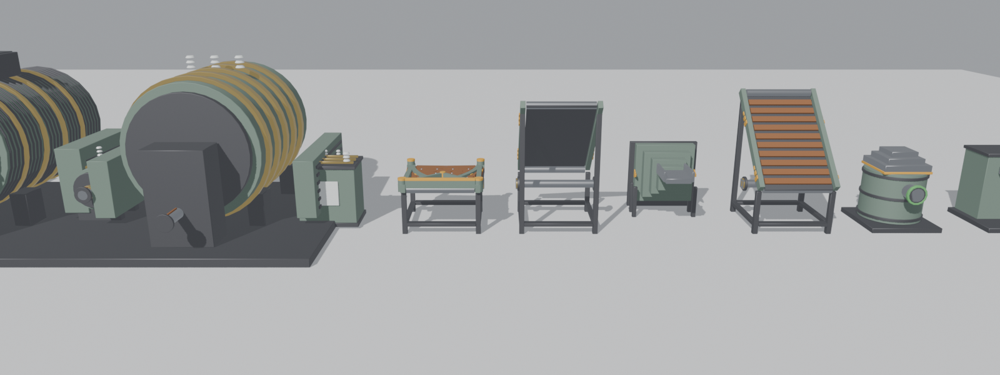

Ferro & Engrenagem
Máquinas, eixos, vapor e esteiras para 7 Days to Die. Aqui fica o passo a passo de cada item do mod: onde fabricar, o que precisa e as linhas de produção completas.

Como funciona
- Energia mecânica: uma fonte (manivela, roda d'água, motor) gira um eixo; eixos, caixas de engrenagem e embreagens levam o torque até as máquinas.
- Fluidos: canos levam água, vapor, óleo, gasolina e lubrificante entre bombas, caixas e motores.
- Esteiras: levam itens entre baús e máquinas; o Funil tira itens dos baús e das máquinas.
- Receita fixa: segure E numa máquina, escolha a produção, e ela fabrica sozinha com o que chega.
Linhas de produção (modo Create)
Itens avançados passam por várias máquinas: fundir, moldar, prensar, misturar, montar.
Itens e blocos do mod
Bancada Eletrônica
BarramentomáquinaBobina ElétricaitemBomba ElétricamáquinaCondensadoramáquinaDínamomáquinaDínamo IndustrialmáquinaEsteira com FiltromáquinaMotor Elétrico IndustrialmáquinaMotor Elétrico ReforçadomáquinaMódulo de Banco de Bateriasitem
Garagem
Montadora de Armas e Ferramentas
Armazém de EsteiramáquinaBomba MecânicamáquinaCaixa de TransmissãomáquinaCaixa de VelocidademáquinaCano de ArmaitemCoronhaitemDespejadormáquinaEmbreagemmáquinaEnvasadoramáquinaEsteiramáquinaEsteira de DescidamáquinaEsteira de SubidamáquinaFunilmáquinaInversor de GiromáquinaMecanismo de DisparoitemMedidor de TorquemáquinaMotor a CarvãomáquinaRegulador de Torquemáquina
Prensa de Peças
Refinaria
Serralheria
Serraria
Tear e Curtume
Torno
Na mão / estações do jogo
Bancada EletrônicamáquinaBancada de ModsmáquinaCarvoeiramáquinaCozinha e DestilariamáquinaFundiçãomáquinaGaragemmáquinaGerador a CarvãomáquinaLaboratóriomáquinaManivelamáquinaManivela de TorquemáquinaMisturadora de ConcretomáquinaMontadora de Armas e FerramentasmáquinaMotor elétricomáquinaOficina de RobóticamáquinaPrensa de MuniçãomáquinaPrensa de PeçasmáquinaRefinariamáquinaSerralheriamáquinaSerrariamáquinaTear e CurtumemáquinaTornomáquina
Máquinas
Bancada Eletrônica44 receitasBancada de Mods74 receitasCozinha e Destilaria13 receitasFundição17 receitasGaragem19 receitasLaboratório8 receitasMisturadora de Concreto5 receitasMontadora de Armas e Ferramentas69 receitasOficina de Robótica3 receitasPrensa de Munição48 receitasPrensa de Peças14 receitasRefinaria11 receitasSerralheria45 receitasSerraria3 receitasTear e Curtume69 receitasTorno7 receitas